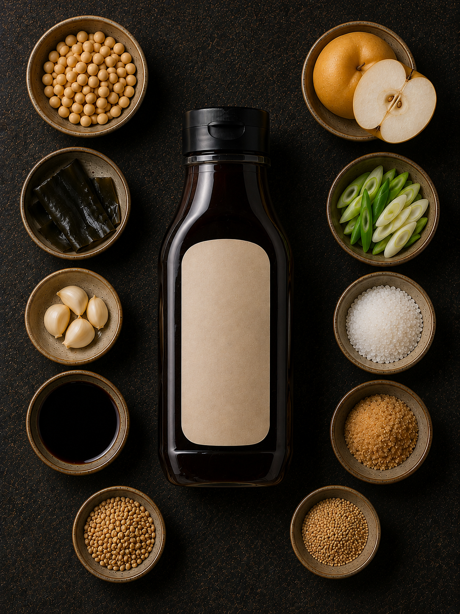
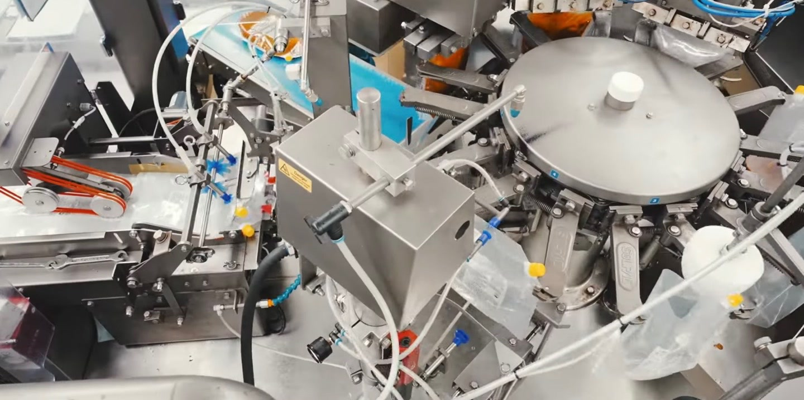
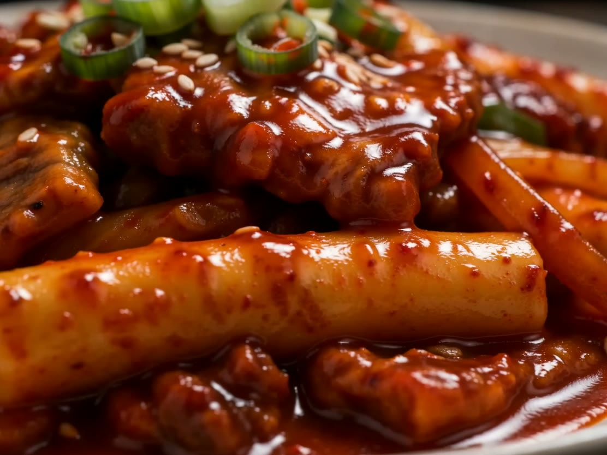
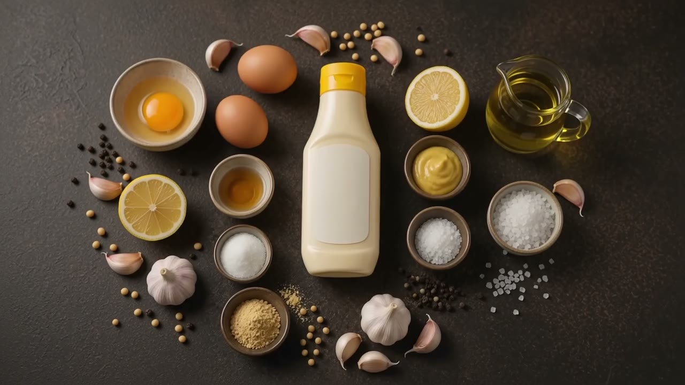
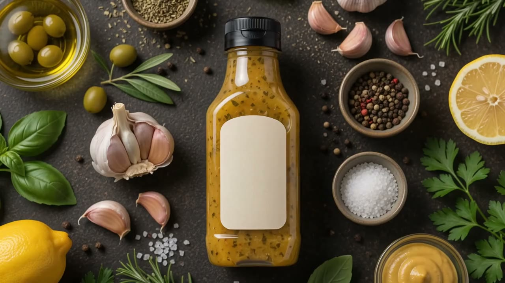
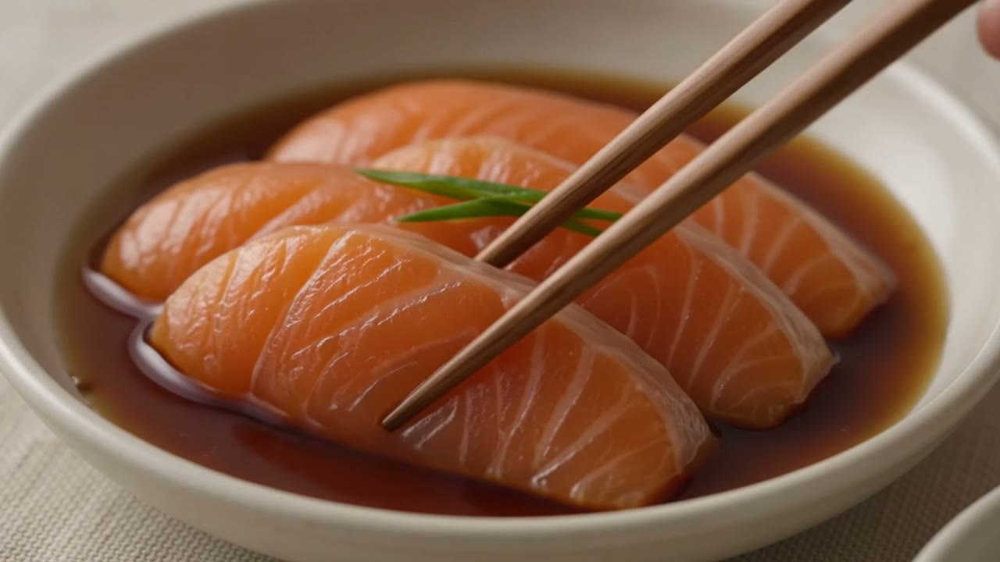
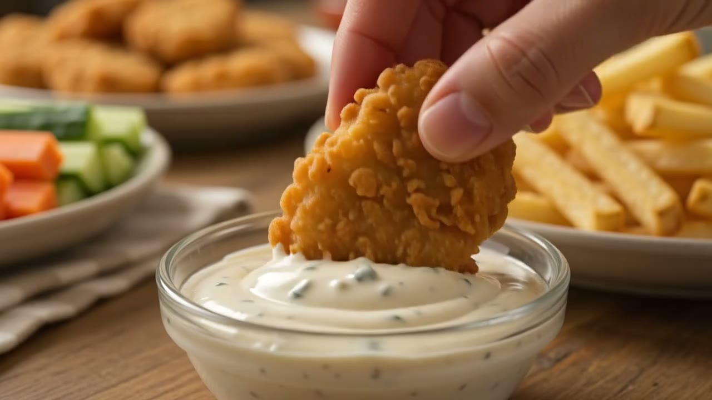

원물
맛의 시작을 고릅니다.
제철의 향과 단맛이 또렷한 재료를 먼저 살핍니다.

찬지기의 세 가지 기준
원물
제철의 향과 단맛이 또렷한 재료를 먼저 살핍니다.
주방
한 술만으로도 익숙한 요리의 맛이 깊어지도록 맞춥니다.
제조
정돈된 생산 라인에서 꼼꼼히 확인하고 바로 밀봉합니다.

재료가 식탁에 닿기까지
오늘의 여섯 접시
익숙한 한 끼에 찬지기 한 술을 더해 보세요. 요리는 쉬워지고, 재료의 맛은 더 또렷해집니다.





